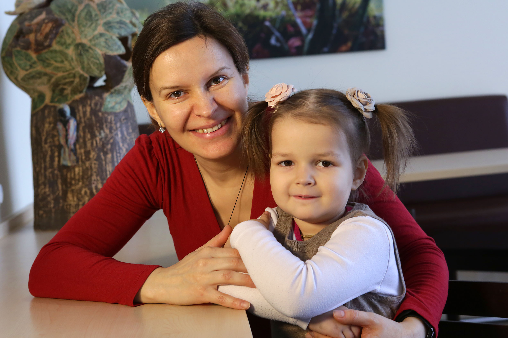

Berlin-Buch · Ukraine · Kinderonkologie
Unter den vielen ukrainischen Kindern, die wir in Berlin behandelten, ist mir eines besonders in Erinnerung geblieben. Nicht nur wegen der Schwere der Erkrankung, sondern weil ich Jahre später einen langen Brief von ihrer Mutter erhielt. Darin beschrieb sie, was ihre Familie in der Ukraine erlebt hatte und was der Aufenthalt in Berlin für sie bedeutete. Während ich den Brief las, wurde mir bewusst, wie unterschiedlich dieselben Ereignisse aussehen können. Für mich war Mira eines von vielen schwer kranken Kindern, die wir behandelten. Für ihre Eltern ging es um ihre kleine Tochter.
Mira war anderthalb Jahre alt, als ihre Eltern erfuhren, dass in ihrem Kopf ein Tumor wuchs. Was dann folgte, beschreibt ihre Mutter eindrucksvoll. Sie suchten Hilfe in der Ukraine, anschließend auch in Russland. Überall erhielten sie dieselbe Antwort. Niemand war bereit, eine Biopsie durchzuführen. Ohne Biopsie ließ sich die Diagnose nicht sichern, und ohne Diagnose konnte keine gezielte Behandlung beginnen. Während die Ärzte zögerten, verschlechterte sich Miras Zustand immer weiter. Schließlich sagte man den Eltern, ihre Tochter werde vermutlich nur noch zwei Monate leben.
Für die Familie begann eine Zeit, die man sich kaum vorstellen kann. Jeden Morgen dieselben Fragen. Was können wir noch tun? An wen können wir uns wenden? Gibt es irgendwo auf der Welt jemanden, der unserem Kind helfen kann? Gleichzeitig wurde den Eltern schmerzhaft bewusst, wie weit die medizinische Versorgung ihres Landes damals von den Möglichkeiten Westeuropas entfernt war.
In dieser Situation begegneten sie einer ehrenamtlichen Helferin namens Olga. Sie stellte den Kontakt zu Menschen her, die bereit waren zu helfen. Irgendwann erreichte die Anfrage schließlich auch unsere Kinderklinik in Berlin-Buch. Wir luden Mira zur Untersuchung nach Deutschland ein. Endlich konnte die Biopsie durchgeführt werden, die in der Ukraine und in Russland niemand hatte wagen wollen.

Nach ihrer Ankunft in Berlin zeigte die Magnetresonanztomographie das ganze Ausmaß der Erkrankung. Der Tumor war weitergewachsen und hatte bereits fast das gesamte Rückenmark mit Metastasen befallen. Mira war inzwischen so geschwächt, dass sie nicht mehr selbständig sitzen konnte. Sie lag im Bett und schaute ihre Mutter mit großen Augen an.
In ihrem Brief beschreibt die Mutter diesen Moment mit wenigen Worten, die mich bis heute berühren:
Mir schien, als würde sie mich mit ihren nicht kindlichen Augen ansehen und sagen: Mama, bitte hilf mir.
Nach der Biopsie stand endlich die Diagnose fest. Mira litt an einem Medulloblastom Grad IV. Bereits am nächsten Tag begannen wir mit der Chemotherapie. Die ersten Tage waren schwer. Mira musste häufig erbrechen und war sehr schwach. Niemand wusste, ob die Behandlung überhaupt noch rechtzeitig kommen würde.
Doch dann geschah etwas, das ihrer Mutter neue Hoffnung gab. Zunächst konnte Mira sich wieder selbst auf die Seite drehen. Wenige Tage später führte ihre Mutter ihr mit einer Handpuppe ein kleines Puppenspiel vor. Zum ersten Mal seit langer Zeit lächelte Mira wieder.
In ihrem Brief schrieb sie:
Das waren die Momente des wahren Glücks. Unser Mädchen lebte wieder auf.
Natürlich verlief die Behandlung nicht ohne Rückschläge. Während einer Chemotherapie entwickelte Mira eine schwere allergische Reaktion auf eines der Medikamente. Innerhalb weniger Minuten verschlechterte sich ihr Zustand dramatisch. Ihre Mutter musste den Raum verlassen, während wir versuchten, die Situation unter Kontrolle zu bringen.
Als sie wieder zu ihrer Tochter durfte, war Miras Gesicht rosig geworden. Kaum sah Mira ihre Mutter, fing sie an zu weinen – als wolle sie sich darüber beschweren, dass sie sie allein mit den Ärzten gelassen hatte.
Die folgenden Monate verlangten Mira und ihrer Mutter alles ab. Auf die Chemotherapie folgte die Bestrahlung. Jeden Morgen musste Mira nüchtern zur Behandlung gebracht werden. Da sie vor jeder Bestrahlung in Narkose gelegt wurde, durfte ihre Mutter sie vorher nicht stillen. Deshalb musste sie ihre kleine Tochter jeden Morgen für einige Zeit allein lassen.
In dieser Zeit waren es nicht nur Ärzte und Pflegekräfte, die der Familie halfen. Die Erzieherin Cornelia kümmerte sich um Mira, spielte mit ihr und lenkte sie ab. Die Physiotherapeutin Walli arbeitete geduldig mit ihr und half ihr dabei, verloren gegangene Fähigkeiten Schritt für Schritt wiederzuerlangen. Für die Mutter waren diese Stunden eine große Erleichterung. Sie wusste, dass ihre Tochter in guten Händen war.
Auch sprachlich war vieles schwierig. Die Mutter sprach damals kein Deutsch. Trotzdem fühlte sie sich nie allein gelassen. Später schrieb sie, das gesamte Team habe immer mit viel Geduld versucht, ihr den Sinn des Gesagten zu vermitteln.
Als ich diesen Satz las, musste ich schmunzeln. Im Klinikalltag denkt man selten darüber nach, wie schwierig medizinische Gespräche für Angehörige sein können, selbst wenn sie dieselbe Sprache sprechen. Hier kamen zusätzlich unterschiedliche Kulturen und eine Sprachbarriere hinzu. Umso mehr freute es mich, dass die Mutter gerade diese Geduld in Erinnerung behalten hatte.
Anderthalb Jahre nach Beginn der Behandlung schrieb sie, Mira erzähle inzwischen viel, spiele gerne und besonders gern mit anderen Kindern. Für die Eltern sei es das größte Glück, ihr Mädchen lächelnd und zufrieden zu sehen.
Eigentlich braucht man über den Erfolg der Behandlung nicht mehr zu sagen.
Am Ende ihres Briefes bedankt sich Miras Mutter bei vielen Menschen. Bei den Ärzten, den Schwestern, den Therapeuten, den Helfern, den deutschen und ukrainischen Stiftungen und ganz besonders bei „Ein Herz für Kinder“. Ohne diese Unterstützung hätte sich die Familie die Behandlung in Deutschland niemals leisten können.
Ein Satz aus ihrem Brief ist mir jedoch bis heute im Gedächtnis geblieben:
Wer kann bewerten, was das Lächeln eines Kindes, die Worte „Mama, ich habe dich so lieb“ oder glückliche Kinderaugen kosten?
Ich könnte darauf bis heute keine Antwort geben.